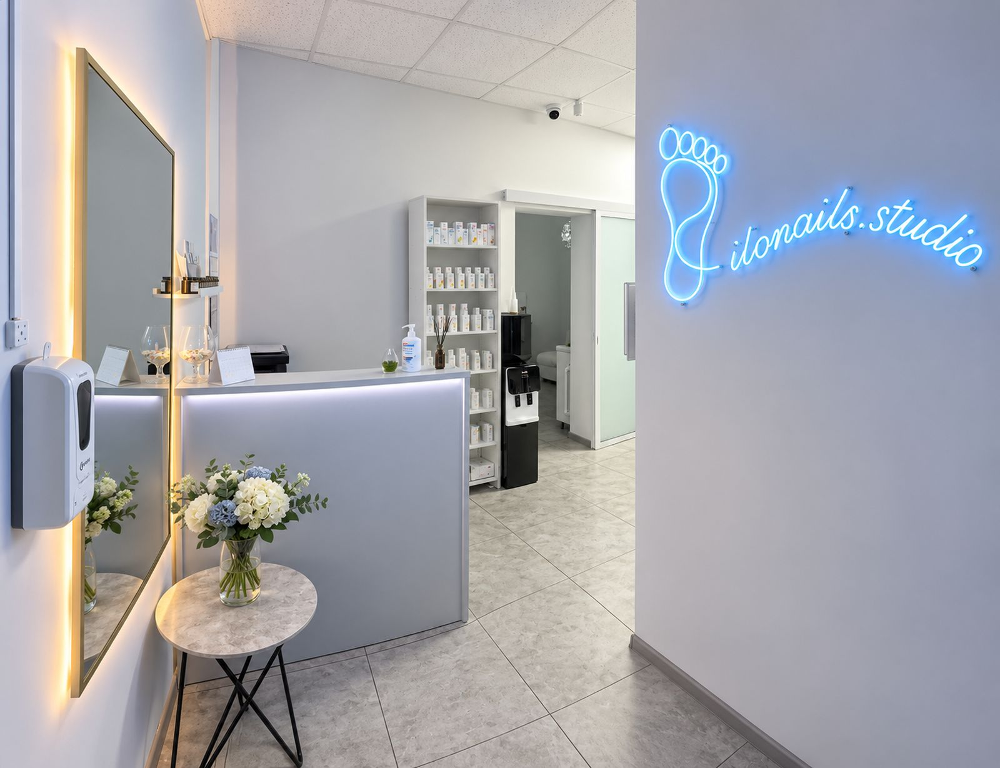
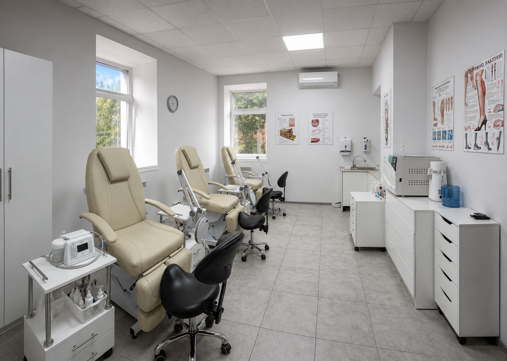
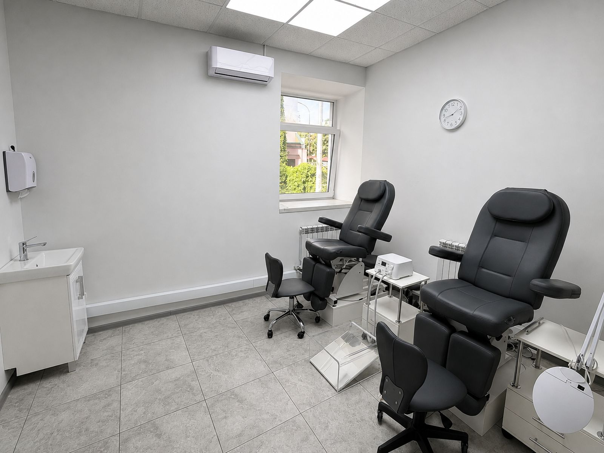
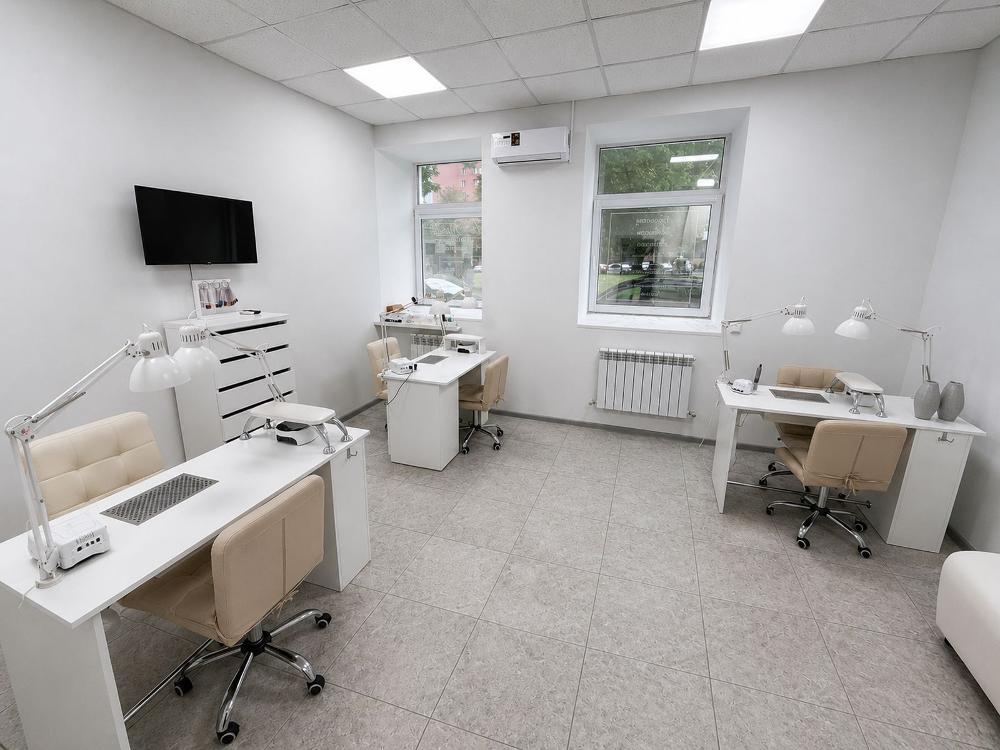

Заключение санитарной станции
- Что проверяли
- Помещение, обработку инструмента и условия хранения
- Что это значит для вас
- Порядок работы со стерильностью проверен не нами, а проверяющим органом. Заключение выдано без замечаний
Подологический центр в Центральном районе Минска. Работаем с проблемами ногтей и стоп, изготавливаем индивидуальные стельки, делаем педикюр и маникюр. Обучаем мастеров педикюра.
Приём ведут подологи, отдельно работает мастер маникюра. Инструмент проходит полный цикл обработки между визитами, автоклав стоит в отдельной стерилизационной.

Подологический центр в Центральном районе Минска. Работаем с проблемами ногтей и стоп, изготавливаем индивидуальные стельки, делаем педикюр и маникюр. Обучаем мастеров педикюра.
Приём ведут подологи, отдельно работает мастер маникюра. Инструмент проходит полный цикл обработки между визитами, автоклав стоит в отдельной стерилизационной.
То, что можно открыть и прочитать целиком.
И что каждый из них означает для вас.
Всё это стоит в кабинете и в стерилизационной, спрашивайте о нём прямо на приёме.



Слева оборудование, справа то, что оно меняет для вас.
Пять шагов между двумя визитами, одинаково для всех. Пропустить нельзя ни один.
Пять шагов между двумя визитами, одинаково для всех.
Два кабинета подолога, зона маникюра и ресепшен.


И что происходит в каждой зоне.
Границу называем сразу, чтобы вы не тратили визит зря.
Если случай требует врача, говорим об этом на приёме и объясняем, к кому идти
Три вопроса, которые задают чаще всего.
Скажем прямо на приёме и объясним, к какому специалисту идти. Подолог работает с ногтем и кожей, врач – с тем, что глубже
Нет. Мы видим состояние ногтя и кожи и работаем с ним. Название болезни и препараты – это к врачу
Работаем аппаратом, без размачивания и без инструментов, которые режут живую ткань. Если на приёме больно, говорите сразу, мы меняем порядок работы